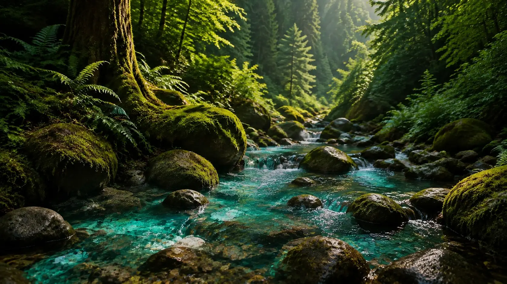

Воздух
Дыши свободно

Чистота высоты. Путь начинается у вершин Эльбруса.

Путь каждой капли начинается на вершинах Эльбруса и продолжается в глубинах земли, где холод, тепло и горные породы создают природный баланс.
Легенда
Воздух, Лёд, Земля и Огонь — единая природная панорама, а не четыре отдельных истории.
Дыши свободно
Чистота высоты. Путь начинается у вершин Эльбруса.
Скользи легко
Талая вода медленно проходит сквозь лёд и горные слои.

Стой твёрдо
Горные породы насыщают воду природными минералами.

Зажги в себе огонь
Подземное тепло и термальные источники завершают природный процесс.

Процесс
Следуйте за каплей: вершина, ледник, горная порода, подземное тепло, природный источник.
Облака сгущаются над Эльбрусом; появляется первая талая вода.
Поток уходит вглубь и опускается сквозь породу.
Глубокие слои придают воде природный минеральный характер.
Подземное тепло и термальный пар встречают поток.
Вода выходит на поверхность среди зелёного леса, мха и чистого ручья.
Что внутри

Вымывается из вулканических пород Приэльбрусья. В воде живёт как кремниевая кислота — она и даёт мягкость и бархатистый вкус.

Вода растворяет его в известняковых слоях. Придаёт вкусу плотность, а вместе с магнием создаёт природную жёсткость.

Растворяется в тех же породах, что и кальций. Даёт вкусу свежесть и узнаваемый минеральный оттенок.

Главные соли состава. Рождаются, когда подземная вода с углекислым газом идёт сквозь карбонатные породы, и смягчают вкус.
Источник
Вода проходит долгий природный путь сквозь горные породы — прежде чем мы бережно её разливаем, сохраняя баланс таким, каким его создала природа.
Читать историю происхожденияДоказательства
Рациональная опора легенды: подготовка, материалы, контроль и стандарты.
Фильтрация без химических реагентов: песчано-гравийные и угольные фильтры, микронная очистка и УФ-обработка.
Линии из Италии, Франции и Германии; вода идёт по собственному минералопроводу.
Собственная лаборатория, контроль каждой партии и показатели безопасности по ГОСТ Р 54316-2020 и ТР ТС 021/2011.
О лабораторииFSSC 22000, государственная регистрация ЕАЭС и Российский знак качества — документы ниже.
Открыть документыДва автономных цеха, точный розлив и состав, сохранённый от источника до бутылки.
Современное контрольно-измерительное оборудование и склад с контролируемым режимом: качество держится от бутылки до отгрузки.

Эту воду создаёт природа. Мы бережно сохраняем путь, который она проходила десятилетиями.
Чистота природы. Безупречность производства.
Попробовать баланс природыГде купить
Официальные дистрибьюторы воды «Новотерская».
Контакты